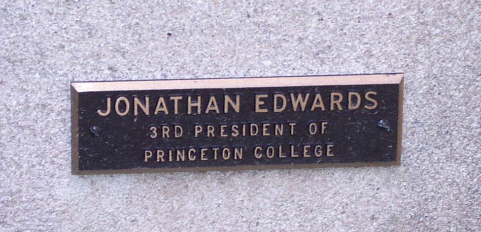
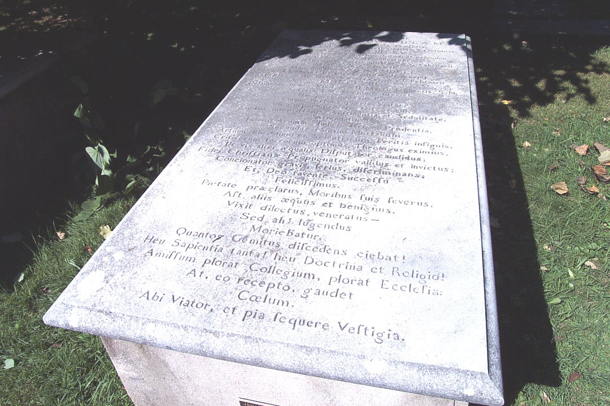
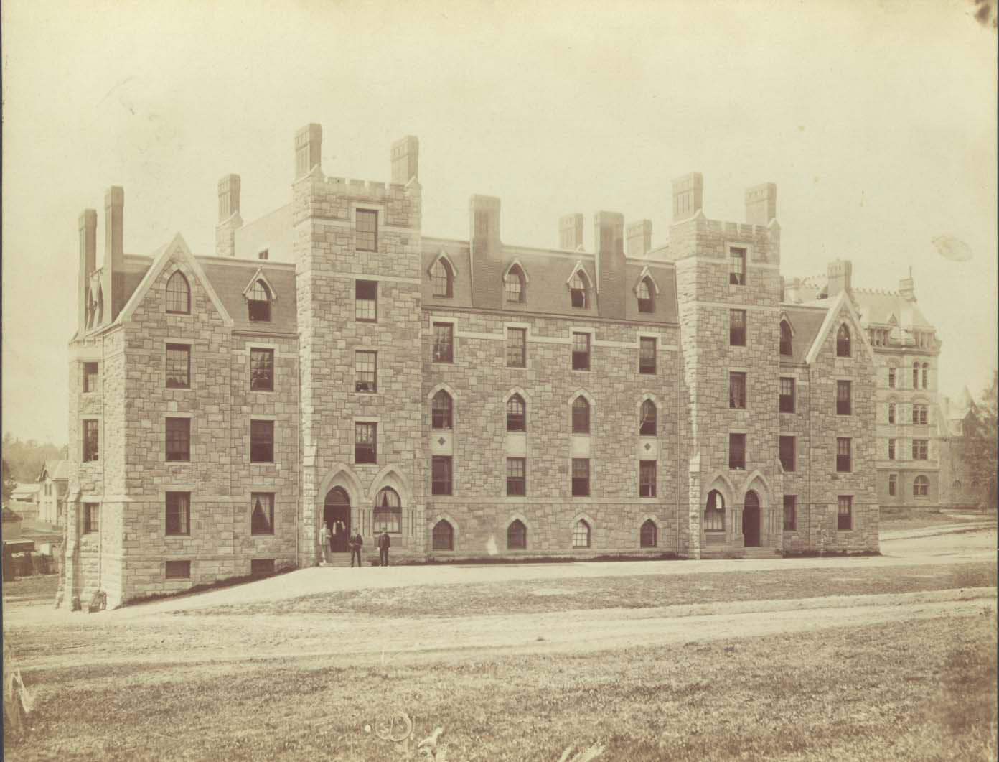

Jonathan Edwards at the College of New Jersey (Princeton University)
 Letter
to Jonathan Sergeant, Treasurer of the College of New Jersey, February 28,
1758
Letter
to Jonathan Sergeant, Treasurer of the College of New Jersey, February 28,
1758
One of the few letters written by Edwards during the five weeks he served as president of the College of New Jersey, as Princeton University was known prior to 1896. Three days after the death of Aaron Burr, who had served as president of the college since 1748, the trustees chose Edwards to succeed his son-in-law. After much consideration and urging from ministers, Edwards accepted the position and was installed as president in Nassau Hall on February 16, 1758. This letter was written only twelve days after his installation. Edwards wrote to Jonathan Sergeant, treasurer of the college, seeking an advance on his stipend for the month of March, and in addition, a loan of 100 pounds. The letter reflects a concern that Edwards had earlier expressed to his widowed daughter Mrs. Aaron Burr, when he had written to her some weeks earlier: "I know I can't live at Princeton, as a President must, on the salary they offer: - yet I have left the matter to their [the Trustees'] generosity. I shall have no money wherewith to furnish the house…" (Manuscript Division, Jonathan Edwards Collection)
(click on document to view larger image)
The Grave of Jonathan Edwards in the Princeton Cemetery, Presidents' Lot, Princeton, New Jersey
After an inoculation against small pox administered by Dr. William Shippen, Edwards died of fever on March 22, 1758, having served as president of the college only thirty-four days. While Edwards succumbed to an untimely death, he left his enduring mark as a religious leader and preacher.

Edwards Hall, c. 1880
The hall commemorates Princeton University's third president, Jonathan Edwards. It was built in 1880 at the behest of President McCosh to fill "the clamant want" of a "new and plain dormitory to provide cheap rooms for ... struggling students," and "to reduce the number of freshmen compelled to live beyond our walls and under no tutorial inspection" (Trustee Minutes, June 16, 1879). In the 1880s and 1890s the hall had a reputation for "plain living and high thinking" and for a time was known as "Poler's Paradise." The hall's architect was Prior and West; its donor was John Cleve Green. (University Archives)
Jonathan Edwards Exhibit, Early Life, The Great Awakening
Follow these links for more information about the Seeley G. Mudd Manuscript Library and Princeton University.